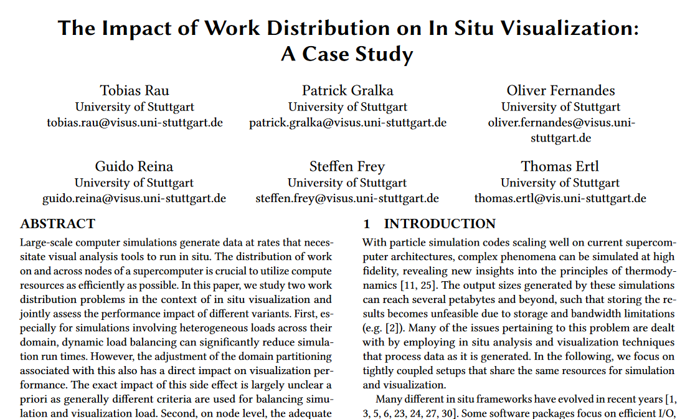

The Impact of Work Distribution on in Situ Visualization: A Case Study


Authors. Tobias Rau, Patrick Gralka, Oliver Fernandes, Guido Reina, Steffen Frey, Thomas Ertl
Venue. ISAV (2019) Workshop Paper
Type. Workshop Paper
Materials.
DOI
supplemental
Abstract. Large-scale computer simulations generate data at rates that necessitate visual analysis tools to run in situ. The distribution of work on and across nodes of a supercomputer is crucial to utilize compute resources as efficiently as possible. In this paper, we study two work distribution problems in the context of in situ visualization and jointly assess the performance impact of different variants. First, especially for simulations involving heterogeneous loads across their domain, dynamic load balancing can significantly reduce simulation run times. However, the adjustment of the domain partitioning associated with this also has a direct impact on visualization performance. The exact impact of this side effect is largely unclear a priori as generally different criteria are used for balancing simulation and visualization load. Second, on node level, the adequate allocation of threads to simulation or visualization tasks minimizes the performance drain of the simulation while also enabling timely visualization results. In our case study, we jointly study both work distribution aspects with the visualization framework MegaMol coupled in situ on node level to the molecular dynamics simulation ls1 Mardyn on Stampede2 at TACC.